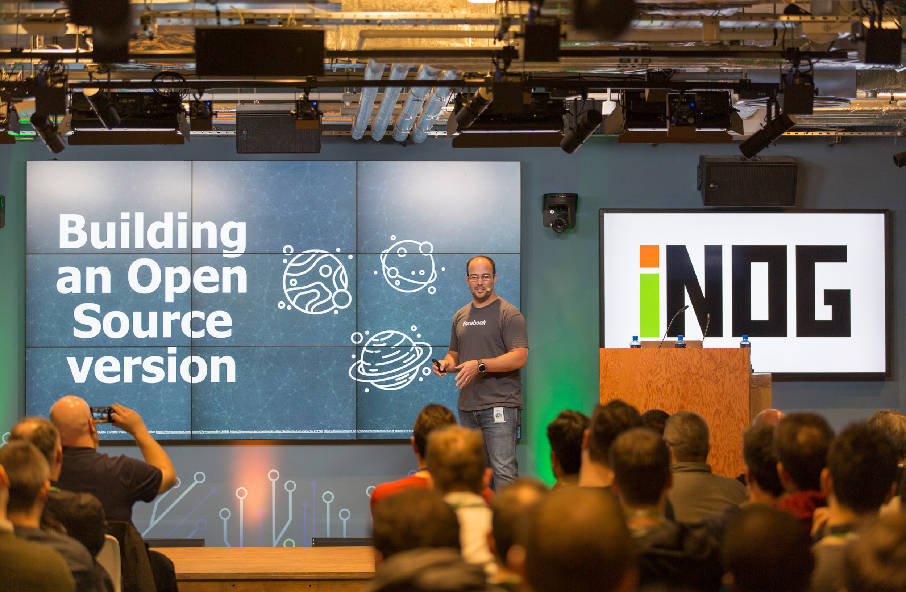
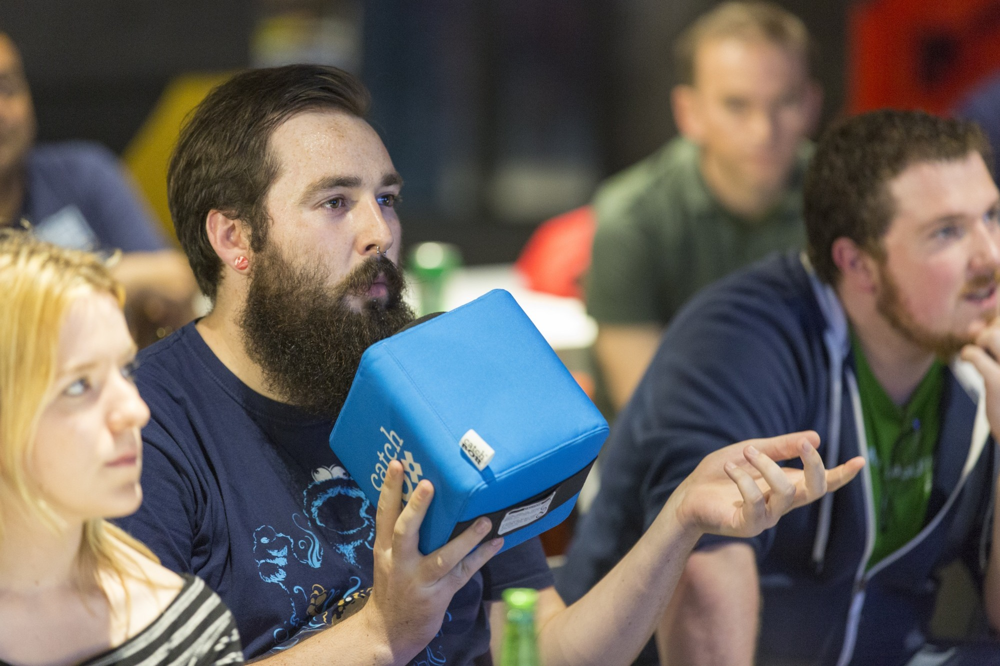
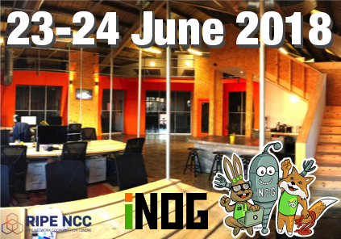
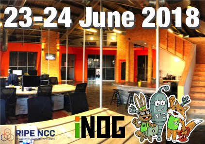

The RIPE NCC has teamed up with the Irish Network Operator Group(iNOG) to deliver a European hackathon in DoSpace on 23rd and 24th of June 2018. The free to attend 2 day hackathon will entertain applicants from a wide range of developers, designers, engineers, and enthusiasts around the world. Locally, the 700+ strong iNOG boasts members from web scale companies such as Amazon, Facebook, Google, Twitter, Zendesk, Workday and Riot Games, but also from vendors like Arista Networks, and local companies including HEAnet, INEX, and Hosted Graphite.
Cristian Sirbu, one of the hackathon organisers and founders of iNOG, said that "even if you don't write code or work with networks yourself, we still really want you to apply, as hackathons benefit from having the widest range of skills possible". Mr. Sirbu says that not just project managers, visual designers, data analysts, and researchers are invited to apply, but that as it is a learning and community event, everyone from students to those seeking career changes are encouraged to come along and learn from one another. "One of the exciting things about hackathons", says Eric Leahy, a long time iNOG member and contributor, "is that they bring people with different skill sets together which generates new and interesting ideas." RIPE NCC will be providing travel grants in the form of EURO 500 funding per person for those who qualify. Mr. Sirbu, who attended the previous RIPE NCC hackathon in Copenhagen highlights that "with greater diversity comes not just more fun, but wider perspectives, and an increased quality of projects across the board".
The hackathon will focus on developing better tools for network operators across multiple domains including enterprise, telecommunications, and small businesses. The general theme is that of improving user interfaces, visualisations, and troubleshooting tools, but also of incorporating AI/machine learning to aid with the automation of common tasks. Attendees are also free to build upon and improve tools developed at previous RIPE NCC hackathons which were hosted in Amsterdam, Copenhagen, Bucharest, and Madrid. All tools and related code will be released as FLOSS (Free Libre Open Source Software) to help improve the resiliency of computer networks and aid operators throughout the world. Attendees can also take advantage of meeting the local community at the quarterly iNOG event being hosted immediately before the hackthon in Workday Dublin headquarters on Thursday the 21st April.
Applications to join the hackathon are available here (before 1st May 2018), and more information about the event is available here.
- END -


 
